【阿卡迪亞零式】輕量級一層 黑貓
關卡簡稱：M1S | Boss：黑貓
四連尖甲
四連尖甲 1、2次為對「距離BOSS最近的人」打扇形攻擊。第3、4則是1、2次的扇形範圍重複攻擊。
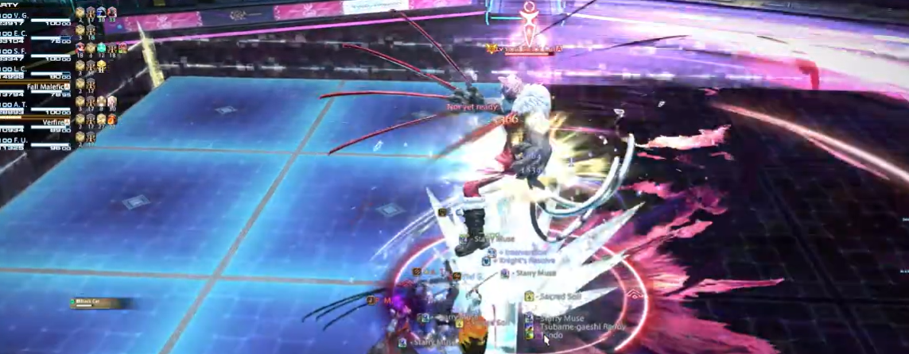
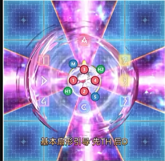
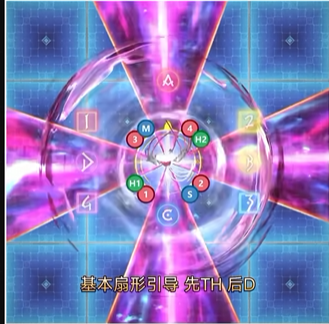
貓踏踏
坦克2連死刑。第一次攻擊後為對方賦予斬擊耐性下降的debuff，因此ST需要在貓踏踏詠唱途中挑釁換坦處理。ST吃完傷害後MT再挑釁取回仇恨即可。
貓生九命 + 二連尖甲 + 靈魂之影 + 雙重or四重利爪
貓生九命後會對BOSS自身賦予貓生九命buff，將接下來釋放的技能儲存下來。這機制在二連尖甲後將會在場上生成兩隻分身。 二連尖甲為兩次連續的半場刀攻擊，攻擊順序為先後抬起手臂的順序。之後在場上身成的分身將會依照BOSS本體先前施放的技能行動。 兩隻分身的二連尖甲結束後BOSS本體將會讀取雙重或四重利爪。雙重為點兩名補師的四人分攤，分MT組ST組在BOSS左右處理。四重為點名坦補或DPS四人的二二分攤，按巨集的分攤分組在十字處理。
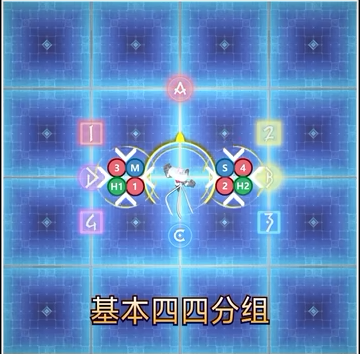
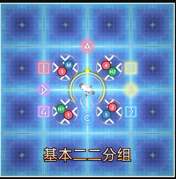
靈魂之影 + 貓跳四連尖甲 + 雙重or四重利爪
貓跳四連尖甲時BOSS會不改變面向左右平移到目標點釋放與開場相同的四連尖甲。 四連尖甲後分身會施放前一次機制時BOSS讀條的雙重or四重利爪。
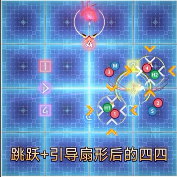
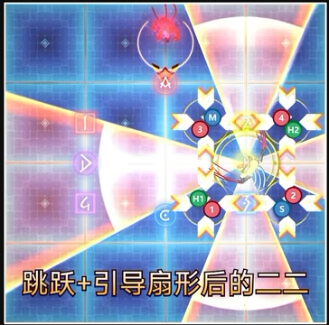
血腥抓撓
傷害非常高的全體物理攻擊。注意減傷。
捕鼠 + 模仿之貓
普通難度也有的破壞場地機制。在中央四個方格中注視北側兩格或南側兩格，確認出現兩次預兆的方格後，注意別踩在會被破壞的地板上。
捕鼠後被破壞的地板會修復，變成8格的場地，其中4格為全新地板、4格為被破壞過的地板。 接著分身會重複4次對坦補或DPS中玩家所在格子的十字範圍攻擊。目標玩家必須在全新的地板承受分身攻擊，攻擊後地板會被破壞，因此不能在被破壞過的地板進行。遠程職業使用外側兩格，近戰職業使用內側兩格。 另外，複製貓的攻擊有在原地暈眩數秒與擊飛上天兩種可能。
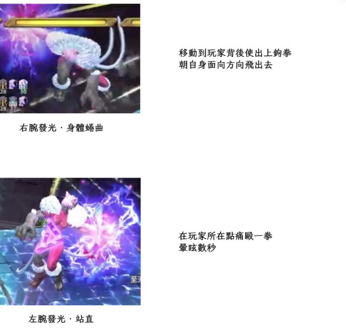
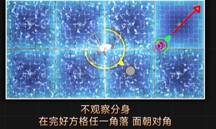
衝擊波
BOSS本體使出擊退，防擊退無效。 之後場地會先後修復，因此必須擊退到先修復的地方，另外安全區必定在對角。
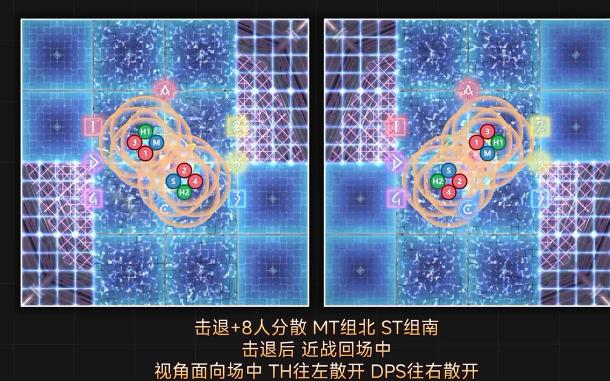
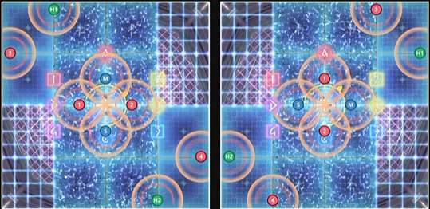
貓跳二連尖甲→靈魂之影
與貓跳四連尖甲相同，不改變面向左右平移到目標點使用二連尖甲。先移動到安全區，待第一次攻擊結束後移動到另一邊躲避第二次攻擊。 之後會使用靈魂之影連線南北隨機出現的分身，保存貓跳的移動方向與二連尖甲的攻擊順序。之後分身會往相同方向平移並使用攻擊，請記好機制。
貓跳四連尖甲→靈魂之影
使用貓跳二連尖甲之後，BOSS會再次使用貓跳四連尖甲。處理方法與前半的四連尖甲相同，此處應以BOSS面向為基準站位，而非分身。因此機制前必須確認BOSS自身面向與自己的散開站位。 在這之後，靈魂之影會連線另一個分身保存移動與攻擊順序。請好好記住BOSS是往左還是往右移動，這很重要。
暴風裂 + 二連尖甲(分身)
連線保存二連尖甲的分身，BOSS使用暴風裂、分身使用二連尖甲。分身會往與先前貓跳二連尖甲相同的方向移動，使用相同的攻擊順序。照記憶的的順序處理。 例如，先前的貓跳本體向右移動、攻擊為左手→右手的話，分身則會往右平移並照左手→右手的順序攻擊。請注意這時分身的移動方向則是以分身的面向為基準。 暴風裂為點名補師兩人的直線分攤攻擊，以BOSS面向為準正面MT組、背面ST組擊和分攤。此時暴風裂會與第一次的二連尖甲同時發動，因此必須在BOSS的正面背面稍微往安全半場偏移。
剪指甲 + 四連尖甲(分身)
連線保存四連尖甲的分身，BOSS使用剪指甲、分身使用四連尖甲。剪指甲，頭上會出現標記且隨後會發生小型的圓形範圍攻擊，坦補四人與DPS四人輪流點名。 此時分身會往與先前貓跳四連尖甲相同的方向移動並攻擊。貓跳時往左邊移動，分身也會往左邊移動，因此MT應將BOSS引導至分身的目的地。
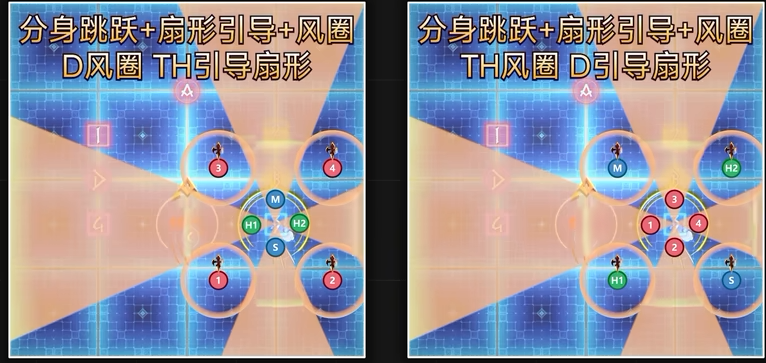

補鼠 → 模仿之貓 + 超暗影 or 碎裂尖甲
後半的模仿之貓在分身攻擊同時，BOSS會使用直線分攤攻擊的超暗影，或對隨機三人扇形攻擊的碎裂尖甲。從BOSS的詠唱欄判斷。
▼ 超暗影為7人分攤
超暗影為有標記的直線分攤攻擊，除分身攻擊目標以外的7人集合分攤即可。
▼ 碎裂尖甲需照職能集合
碎裂尖甲會點1名坦克、1名補師與1名DPS發出扇形攻擊，面對BOSS左側為坦克、中間DPS、右側補師按照職能固定站位。
傾盆大貓
傾盆大貓會連續4次對連線對象使出扇形攻擊，並點名距離BOSS最近與最遠的人圓形分攤。D1D2各牽一條線，在東跟西站好處理扇形。MTST兩人在BOSS下方，D3D4H2H1則在BOSS南方外側集合分攤。 在第一次扇形攻擊後將線交給雙坦，D1D2回到BOSS南方外側， 雙坦在第二次扇形攻擊之後開無敵，用無敵處理第三第四次。
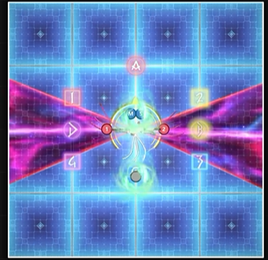
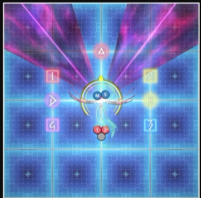
迅貓急襲
各憑本事，不要吃到兩次攻擊的話基本上不會死。
補鼠 (狂暴時間切)
時間切， 請在所有地板被破壞前擊敗BOSS。